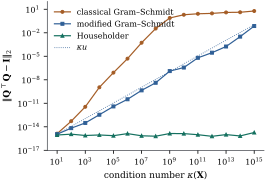

10.3 Householder and Givens QR
Orthogonal matrices preserve lengths (Proposition 1.5.3(a)).
For any orthogonal
10.3.1. Householder reflections
A reflection
Let
Proof.
The opposite sign choice,
Let
(a) There are reflections
(b) The reduction takes
(c) (Backward stability.) In floating-point arithmetic, the computed
Proof.
(a) Induction on the column. Suppose
(b) Step
(c) This is a theorem of rounding-error analysis, not of linear algebra, and we state it without proof. Its essence is that a reflection applied in floating point is an exact reflection applied to a slightly perturbed matrix, that orthogonal matrices do not amplify perturbations, and that the
Part (c) is why QR is the default. Its backward error
is small relative to each column separately, which Section 10.5 uses to
explain why column scaling does not change the accuracy
of QR. Software never forms
import numpy as np
import statsmodels.api as sm
def house(x):
"""Unit vector v with (I - 2 v v') x = alpha e_1, alpha = -sign(x_1) ||x||."""
alpha = -np.copysign(np.linalg.norm(x), x[0])
v = x.astype(float).copy()
v[0] -= alpha # x_1 - alpha adds two numbers of the same sign
return v / np.linalg.norm(v), alpha
def householder_qr(X):
"""Return the reflection vectors and the p x p triangle R of X = Q [R; 0]."""
A = np.array(X, dtype=float)
n, p = A.shape
vs = []
for j in range(p):
v, alpha = house(A[j:, j])
A[j:, j:] -= 2.0 * np.outer(v, v @ A[j:, j:]) # apply I - 2vv' to the trailing block
vs.append(v)
return vs, np.triu(A[:p, :])
def apply_Qt(vs, y):
"""Q'y, applying the reflections H_1, ..., H_p in turn (Q itself is never formed)."""
z = np.array(y, dtype=float)
for j, v in enumerate(vs):
z[j:] -= 2.0 * v * (v @ z[j:])
return z
def apply_Q(vs, z):
"""Q z, applying the reflections in reverse order."""
w = np.array(z, dtype=float)
for j in range(len(vs) - 1, -1, -1):
v = vs[j]
w[j:] -= 2.0 * v * (v @ w[j:])
return w10.3.2. Regression quantities from the factorization
Section
6.10 derived the regression quantities from the thin
factorization
Let
(a)
(b)
(c)
(d)
Proof.
- (a) With
- (b)
- (c)
- (d) The first
Part (d) is the QR form of Proposition 10.2.2(b):
by uniqueness of the triangle,
For the state data of Example (Murder rates by the augmented factorization),
Householder QR (Theorem 10.3.2) gives
data = sm.datasets.statecrime.load_pandas().data.drop(index="District of Columbia")
y = data["murder"].to_numpy()
X = np.column_stack([np.ones(len(y)), data[["poverty", "single", "urban"]]])
n, p = X.shape
vs, R = householder_qr(X)
c = apply_Qt(vs, y) # c = Q'y = (c1, c2)
c1, c2 = c[:p], c[p:]
beta = np.linalg.solve(R, c1) # triangular system R b = c1
sse = c2 @ c2 # SSE = ||c2||^2
resid = apply_Q(vs, np.concatenate([np.zeros(p), c2]))
seq_ss = c1 ** 2 # sequential sums of squares, in column order
print("R diagonal:", np.round(np.diag(R), 4))
print("coefficients:", np.round(beta, 4), f" SSE = {sse:.4f}")
print("sequential SS (intercept, poverty, single, urban):", np.round(seq_ss, 3))10.3.3. Givens rotations
A reflection zeroes a whole column at once. Sometimes
it is better to zero one entry at a time, touching only
two rows. This is the case when
(a) For
(b) Zeroing the subdiagonal of
(c) (Row-wise QR.) Let
(d) A rotation of rows
Proof.
- (a)
- (b) When entry
- (c) Before rotation
- (d) Each new row is a combination of the two old ones.
Part (c) turns QR into a streaming algorithm
(Gentleman 1973): feed the rows of
def givens(a, b):
"""c, s, r with [[c, s], [-s, c]] @ [a, b] = [r, 0]."""
if b == 0.0:
return 1.0, 0.0, a
r = np.hypot(a, b) # sqrt(a^2 + b^2) without overflow
return a / r, b / r, rdef add_row(R, z, x, y):
"""Rotate one observation (x, y) into the triangle R and the vector z = (Q'y)[:p].
Returns the new R, z and the entry that leaves: its square is the increase in SSE.
"""
R, z, x, y = R.copy(), z.copy(), np.array(x, dtype=float), float(y)
for k in range(len(x)):
c, s, r = givens(R[k, k], x[k])
Rk, xk = R[k, k:].copy(), x[k:].copy()
R[k, k:], x[k:] = c * Rk + s * xk, -s * Rk + c * xk
z[k], y = c * z[k] + s * y, -s * z[k] + c * y
return R, z, y
def rowwise_ls(X, y):
"""Least squares with one pass over the rows and O(p^2) memory."""
p = X.shape[1]
R, z, sse = np.zeros((p, p)), np.zeros(p), 0.0
for xi, yi in zip(X, y):
R, z, leftover = add_row(R, z, xi, yi)
sse += leftover ** 2
return R, z, sse
R_row, z_row, sse_row = rowwise_ls(X, y)
print("coefficients (row-wise Givens):", np.round(np.linalg.solve(R_row, z_row), 4))
print(f"SSE (row-wise Givens): {sse_row:.4f}")The rotation in givens uses
hypot, which computes
10.3.4. Gram–Schmidt revisited
Gram–Schmidt (Theorem 1.5.2) also
computes a QR factorization, at
For

def cgs(X):
"""Classical Gram-Schmidt: inner products with the original column."""
n, p = X.shape
Q = np.zeros((n, p))
for j in range(p):
w = X[:, j] - Q[:, :j] @ (Q[:, :j].T @ X[:, j])
Q[:, j] = w / np.linalg.norm(w)
return Q
def mgs(X):
"""Modified Gram-Schmidt: subtract each direction from the working vector at once."""
Q = np.array(X, dtype=float)
n, p = Q.shape
for j in range(p):
Q[:, j] /= np.linalg.norm(Q[:, j])
Q[:, j + 1:] -= np.outer(Q[:, j], Q[:, j] @ Q[:, j + 1:])
return QLoss of orthogonality does not make modified
Gram–Schmidt useless. It is numerically equivalent to
Householder QR applied to
Idea. Orthogonal transformations
reduce
10.3.5. Exercises
A. Check your understanding
Find the Householder vector and
Solution.
B. Practice
Solution.
Weighted least squares with a diagonal weight matrix
Solution.
C. Going deeper
Show that, in exact arithmetic, Householder QR (Theorem 10.3.2)
applied to